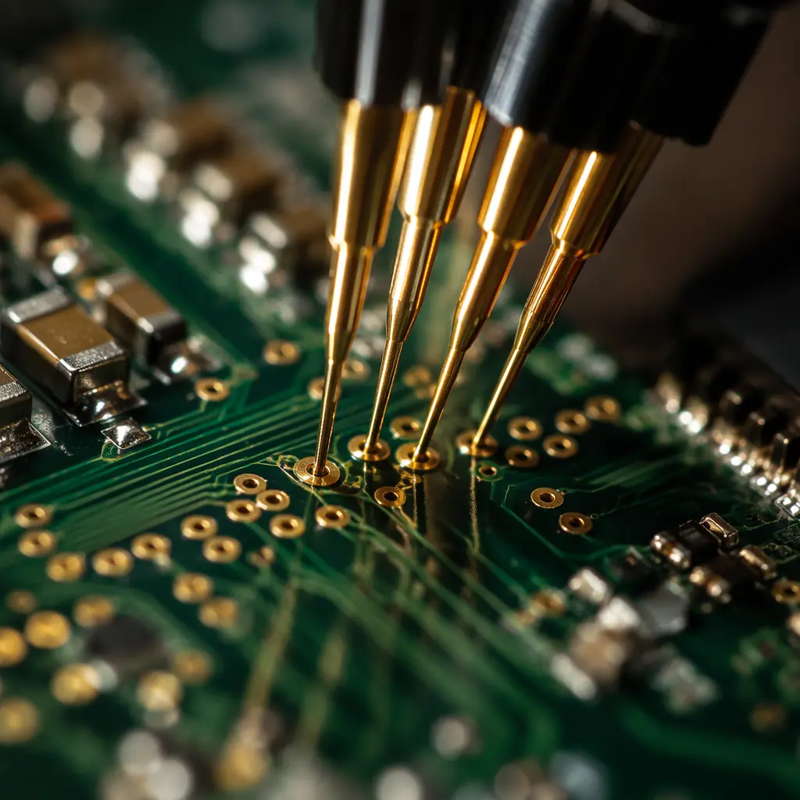
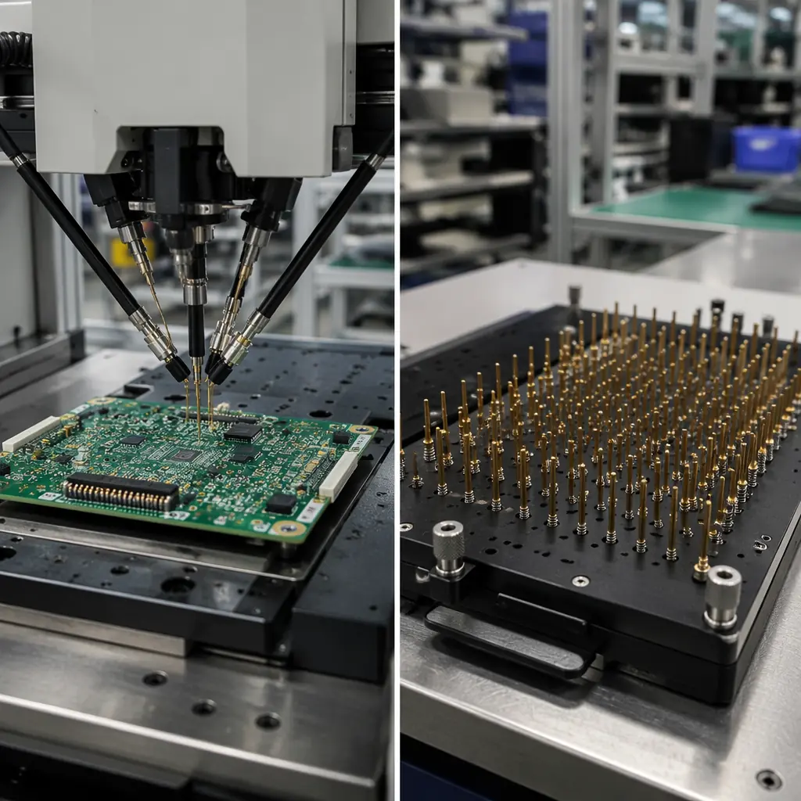

Every PCB that leaves a factory must pass electrical testing — but "electrical test" is not one thing. It spans three fundamentally different methods: Flying Probe Test (FPT), In-Circuit Test (ICT), and Functional Test (FCT). Each operates at a different level of the assembly, catches different classes of defects, and costs dramatically different amounts per unit. Choosing wrong means either overpaying for coverage you don't need — or shipping boards with latent defects that surface in the field.
At Huaxing PCBA, we run 12+ flying probe stations and 6 ICT fixtures across our Shenzhen facility, testing over 800,000 boards per month for customers in automotive, medical, industrial, and consumer electronics. This guide draws on that volume to help procurement managers and hardware engineers pick the right test strategy — balancing cost, coverage, and throughput for their specific production stage.

What Each Test Method Actually Does
Before comparing costs, it's worth understanding what each method checks — because "passes electrical test" means very different things depending on which method ran.
Flying Probe Test (FPT) — Fixtureless, Program-Driven
Flying probe uses 4-8 movable needles that fly across the board surface, probing test points one at a time. No custom fixture is needed — the machine reads CAD data (IPC-2581 or ODB++) and generates the test program automatically. FPT checks: opens/shorts, component values (R/L/C), diode polarity, and basic continuity. Typical cycle time: 30-90 seconds per board depending on net count. Best for prototypes, NPI, and low-to-medium volumes (1-5,000 units/year). See our complete PCB testing methods guide for the full testing landscape.
In-Circuit Test (ICT) — Bed-of-Nails Fixture
ICT uses a custom spring-loaded pin fixture (bed-of-nails) that contacts every net on the board simultaneously. Once the fixture closes, the entire board is tested in 2-15 seconds. ICT checks: shorts/opens, component values with high precision (±1%), missing/wrong components, solder bridges, and can power up individual circuit blocks in isolation. The catch: a custom ICT fixture costs $3,000-$15,000 and takes 2-4 weeks to fabricate. Best for medium-to-high volumes (5,000+ units/year) where that NRE amortizes across many units. For quality standards context, read our IPC Class 2 vs Class 3 comparison.
Functional Test (FCT) — End-Use Simulation
FCT powers up the assembled board and simulates real operating conditions — applying input signals, measuring outputs, and verifying the board behaves as specified. Unlike FPT/ICT which verify manufacturing correctness, FCT verifies design functionality: does the power supply regulate? Does the MCU boot? Does the RF section transmit? FCT requires a custom test jig with interface connectors, load simulators, and possibly a PC running test scripts. Fixture cost: $5,000-$30,000. Cycle time: 30 seconds to 5 minutes. FCT is complementary, not a replacement — it catches defects that FPT and ICT cannot see. Learn about wider quality verification in our supplier quality scorecard guide.
Key Takeaway: FPT checks manufacturing (is each net connected?), ICT checks assembly (are the right components in the right places?), FCT checks behavior (does the board do what it's supposed to?). They form a detection pyramid — each layer catches what the layer below misses.
Head-to-Head: Cost, Coverage, and Speed
| Parameter | Flying Probe | ICT | Functional Test |
|---|---|---|---|
| Fixture NRE Cost | $0 (no fixture) | $3,000-$15,000 | $5,000-$30,000 |
| Per-Unit Test Cost | $0.50-$3.00 | $0.05-$0.30 | $1.00-$8.00 |
| Cycle Time | 30-90 sec | 2-15 sec | 30 sec - 5 min |
| Fault Coverage | 85-95% | 95-98% | 60-90% (functional) |
| Fixture Lead Time | None | 2-4 weeks | 3-6 weeks |
| Design Change Cost | $0 (reprogram) | $500-$3,000 (modify fixture) | $1,000-$5,000 |
| Best Volume Range | 1-5,000/yr | 5,000-100,000+/yr | Any volume |
| Detects Missing Components | Partial | Yes | Indirectly |
| Tests Powered-Up Behavior | No | Limited | Yes |

Which Test Method at Which Production Stage
The most common mistake we see: customers request ICT for prototype runs of 50 boards, or skip functional test entirely on safety-critical products. The optimal strategy almost always uses different methods at different stages.
Prototype & NPI (1-100 units) → Flying Probe Only
At this stage, the design is still fluid. ICT fixture investment makes zero sense because a single layout change can obsolete the fixture. Flying probe provides 85-95% fault coverage with zero NRE and same-day setup — ideal for catching assembly defects on first articles. Add a manual functional checkout to verify core behavior. Our DFM tips guide covers how to design for testability from prototype stage.
Low-Volume Production (100-5,000/yr) → Flying Probe + FCT
Volume is climbing but not enough to amortize an ICT fixture. Stick with flying probe for manufacturing verification and add a dedicated functional test jig. The FCT investment ($5,000-$15,000) pays back quickly: it catches functional defects that flying probe cannot see — wrong firmware version, marginal power supply, intermittent RF performance. For boards heading into regulated industries, read our certifications and compliance guide.
Mid-Volume (5,000-50,000/yr) → ICT + FCT
This is the sweet spot for ICT. At 5,000 units/year, even a $10,000 fixture amortizes to $2/unit in the first year — and the per-unit test cost drops from $1.50 (flying probe) to $0.10 (ICT). The 2-15 second cycle time also means one ICT station replaces 4-6 flying probe stations in throughput. Combine with a functional test station at end-of-line. Our SMT stencil design guide covers upstream process controls that reduce defects before testing.
High-Volume (50,000+/yr) → ICT + Flying Probe + FCT
At this scale, defect prevention is cheaper than detection — but multilayer testing is standard practice. ICT runs on 100% of boards for assembly verification. A sample-based flying probe audit (1-5% of production) catches any drift in bare-board quality before it hits the ICT station. Functional test may run on 100% for safety-critical products (automotive ECU, medical) or sample-based for consumer electronics. For high-reliability requirements, see our burn-in and ESS testing guide.
When Functional Test Is Non-Negotiable
Some products simply cannot ship without functional test — regardless of volume. These include:
Automotive electronics (ISO 26262): Any ASIL-rated ECU requires end-of-line functional verification with traceable test records. A missed solder joint on a BGA that ICT can't probe could mean an airbag that doesn't deploy.
Medical devices (IEC 60601): Patient-connected electronics require verification of isolation barriers, leakage currents, and alarm functions — all of which only functional test can confirm.
Power electronics: A board that passes ICT with correct component values can still have a marginal MOSFET that fails under load. FCT under rated current is the only way to catch this.
RF/wireless modules: ICT can't measure EVM, output power, or receiver sensitivity. FCT with a spectrum analyzer or RF test set is essential.
Procurement Tip: When comparing quotes from PCB assembly suppliers, ask "what's included in electrical test?" A quote that says "100% electrical test included" without specifying the method is almost always flying probe only — and the ICT and FCT will appear as separate line items. Read our PCB quote line-by-line guide to decode what you're really paying for.
The Test Strategy Decision Framework
Use this simple decision tree when specifying test requirements on your next PCB assembly order:
What's your annual volume?
Under 5,000 units → start with flying probe. Over 5,000 units → ICT becomes cost-competitive. Over 50,000 → ICT is the clear winner on per-unit cost and throughput.
Is the design stable?
If you expect layout changes in the next 6 months, delay ICT investment. Flying probe adapts to design changes instantly — and the $0 change cost is especially valuable during product ramp-up.
Does the product have safety/failure consequences?
If a field failure risks injury, regulatory action, or >$10,000 warranty cost, functional test is mandatory at 100% — regardless of volume. The cost of one field return often exceeds the entire test investment. See our PCB cost factors guide for total cost of ownership modeling.
Are there hidden-joint components (BGA, QFN, LGA)?
ICT probes only reach exposed test points — solder joints under BGAs are invisible to electrical test alone. For boards with dense BGA/QFN populations, pair ICT with X-ray inspection (AXI) to catch hidden defects. This is especially important for BGA assembly where rework costs are significant.
What to Specify on Your Purchase Order
When placing a PCB assembly order, be explicit about test requirements. "100% electrical test" is too vague. Instead, specify:
| Specification Item | Example Entry |
|---|---|
| Test Method | ICT (In-Circuit Test) + Functional Test |
| Coverage Target | ≥95% net coverage on ICT |
| Test Standard | IPC-9252 Class 2 |
| FCT Parameters | Power-up, firmware boot, all I/O loopback, RF output power ±1dB |
| Test Records | Serial-numbered pass/fail log, CSV format |
| Fixture Ownership | Customer-owned, returnable on request |
At Huaxing PCBA, we provide flying probe, ICT, and functional test as in-house services — no subcontracting delays. Our test engineering team develops fixtures and programs in parallel with PCB fabrication, so test readiness never gates your production schedule. Our facility handles up to 32-layer boards across 8 SMT lines with full traceability from bare-board test through final functional verification.